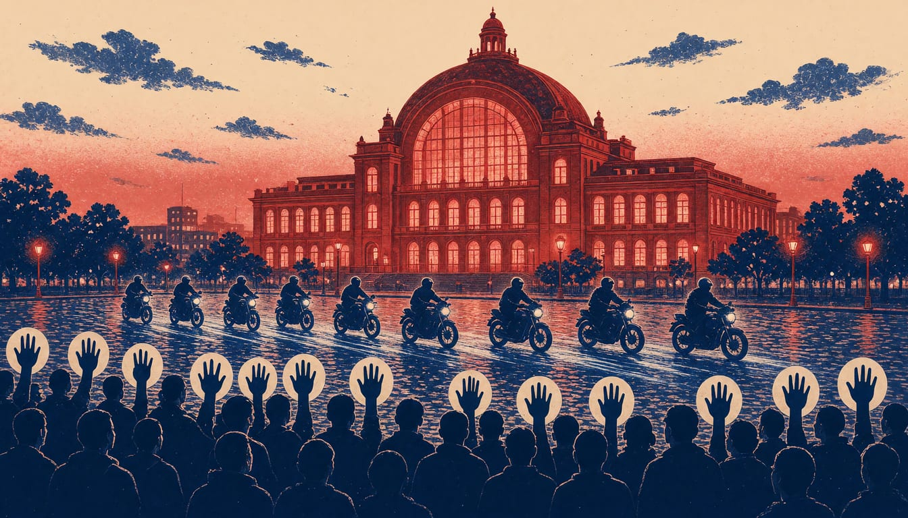

Up to 50 leaders join Rutte in Dublin in Garda's biggest operation, say Gardaí
More than 5,000 Gardaí will work over 15,000 twelve-hour tours for the summit, while protesters march on Friday over fuel prices and the cost of living.

Mark Rutte, the NATO secretary general, joins up to 50 European leaders at Dublin's Convention Centre on Thursday, guarded by what An Garda Síochána, Ireland's national police service, calls the largest policing operation in the state's history. Gardaí will work more than 15,000 twelve-hour tours of duty in an operation costing tens of millions. People of Ireland Against Fuel Prices marches on Friday from the GPO, the central post office on O'Connell Street, to Dublin Castle, calling for action on fuel prices and the cost of living. Mary Lou McDonald accuses the Government of trying to "ditch the Triple Lock", the rules on sending Irish troops abroad.
McDonald, Sinn Féin's leader, told the Dáil, Ireland's parliament, that the French president, the German chancellor and leaders of other EU states that are also NATO members were coming to Dublin on Thursday. Europe's direction of travel, she said, is greater militarisation, deeper defence integration and even closer alignment with NATO. The group seeks support for nationwide demonstrations and convoys on the same cause.
The Irish Times reports that over 5,000 Garda members will police the events, with more than 100 advanced escort motorcyclists and 200 motorcycle escorts on standby. Over 500 public order Gardaí will be on duty each day on 12 and 13 November, in new flame retardant suits and body armour. They will be backed by more than 40 retrofitted patrol vehicles, water cannon and command vehicles. Garda Superintendent Liam Geraghty said the operation is bigger than a US presidential visit.
McDonald told the Dáil the Government is rushing the legislation through the house without letting it go before an Oireachtas committee, the committee stage of Ireland's parliament, where deputies could examine it further. Under it, sending more than 12 members of the Irish Defence Forces overseas requires UN approval, a Government decision and a Dáil vote.
The Government's opponents have also questioned the attendance of Rutte at a meeting of EU and other political leaders in Dublin on Thursday. In October, the Dáil had voted by a narrow margin to reform the rules on deploying peacekeeping troops. Jack Chambers, the Defence Minister, said: "We have no intention of joining Nato, there's no plan to join Nato, there's no mandate to join Nato."